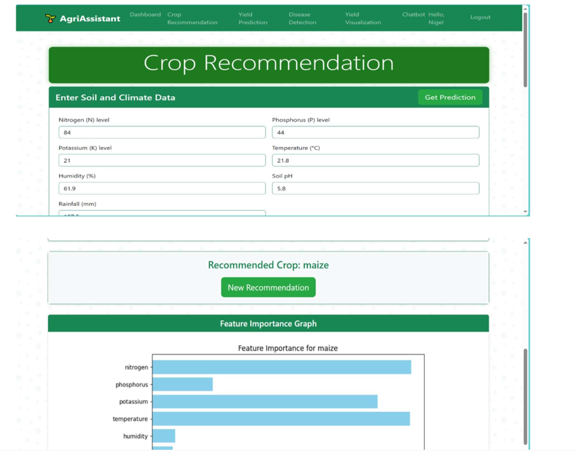
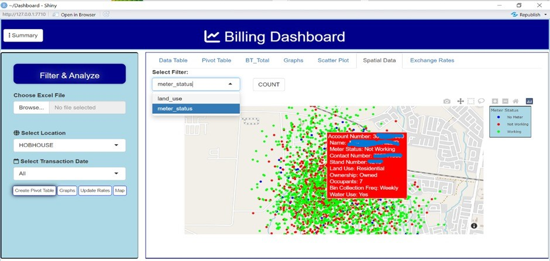
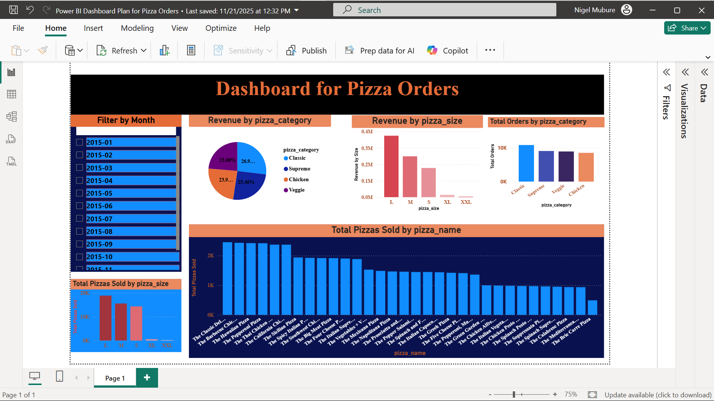
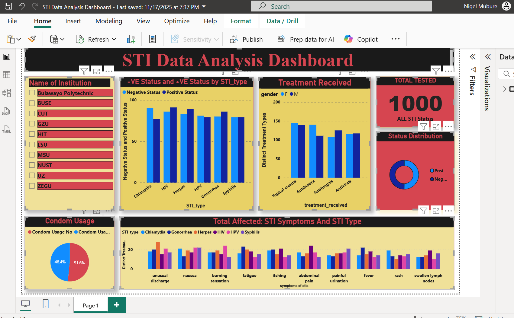

About Me
I am a passionate Data Science graduate with a strong interest in applying data analytics, system design, and machine learning to solve real-world problems. I enjoy working with diverse datasets, building analytical models, and developing data-driven systems that support informed decision-making.
Beyond analysis, I have hands-on experience designing and implementing information systems that structure, validate, and visualize data for operational use. My curiosity drives me to continuously explore new technologies, enabling me to adapt across analytics, databases, and cloud-deployed applications. I am committed to leveraging data analytics, database management, visualization, and system thinking to help organizations improve transparency, efficiency, and evidence-based planning.
Here are my academic transcripts showcasing my educational achievements:
A full-stack web-based Management Information System (MIS) designed to support
grassroots football administration in Honde Valley, Zimbabwe. The system improves
transparency, integrity, and accessibility of league information by digitizing
fixtures, results, standings, and team data in line with ZIFA’s grassroots football
development vision.
This solution operates as a grassroots football MIS, emphasizing system design, data flows, and process standardization at community level.
It models core football operations—fixtures, results, standings, and administration—into a centralized system, improving data integrity, traceability, and reporting.
Live System:
Impact: This project demonstrates how technology can strengthen
grassroots football governance, enhance visibility of rural leagues such as Honde Valley,
and contribute to transparent football development across Zimbabwe.
AgriAssistant is an AI-powered agricultural support system designed to assist farmers in making data-driven decisions. It integrates land suitability analysis, crop yield forecasting, plant disease detection, interactive data visualization, and an intelligent chatbot to provide comprehensive support for sustainable farming.

This Data App project is a comprehensive web-based Billing Analytics Dashboard designed to revolutionize how the City of Mutare analyzes and visualizes billing-related data across all services, including rates, sewer, water, street lights, and more. It aims to centralize data, improve reporting, and standardize KPIs for better decision-making.
Motivation: The current reliance on fragmented Excel sheets for multiple suburbs leads to risks of data loss, errors, and inefficiencies. This dashboard helps streamline analysis, enhance data security, and support strategic planning. Tools: R, GIS libraries (Mapview, Folium), PostgreSQL, Shiny  Interactive dashboard analyzing pizza sales KPIs, top products, and customer trends. Tools: Power BI 
This project is an interactive Power BI dashboard designed to analyze and
visualize sexually transmitted infection (STI) data across multiple institutions.
The dashboard presents key health indicators such as STI status distribution,
treatment types received, condom usage, and STI symptoms by infection type.
It supports data-driven public health decision-making by revealing trends,
risks, and treatment effectiveness.
Tools: Power BI, Data Cleaning, Data Modeling Key Features: Interactive slicers, institutional comparison,
real-time filtering, and dynamic health insights. 
Showcasing skills in creating interactive dashboards, analyzing datasets, and utilizing DAX for insightful reviews of fast food sales data. This project demonstrates my ability to craft engaging visualizations, interpret key insights, and review dataset trends effectively.
Tools: Power BI, DAX Email: nimubure21@gmail.com LinkedIn: https://www.linkedin.com/in/nigel-mubure-a76564287/ GitHub: github.com/MuxyNigelEducation
Ordinary Level
Advanced Level (2019-2020)
University Undergraduate
Academic Transcripts


Projects
Pungwe Valley Grassroots Football League Management System (Live)
Objectives:
Key Features:
Tools & Technologies:
Experience & Skills Gained:
AgriAssistant (Final Year Project)
Objectives:
Skills Gained:
Screenshots:
City of Mutare Billing Analytics Dashboard
Screenshots:
Pizza Sales Analysis Dashboard
STI Health Data Analysis Dashboard
Fast Food Sales Power BI Dashboard
Screenshots:

Skills
Contact